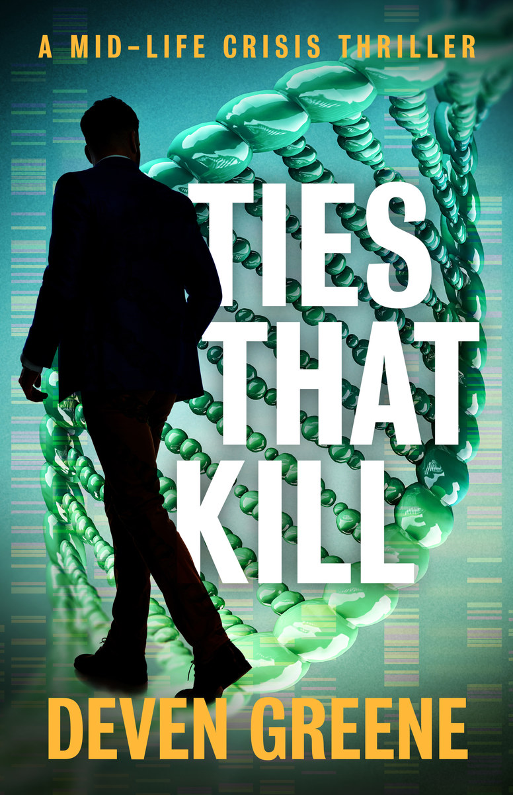

Mid-Life Crisis Thriller Book 3: Ties That Kill
Chemistry Professor Martin Starling faces a life-altering stroke that unveils a clandestine genetic mutation responsible for his disability. As he delves into the mystery of his conception through artificial insemination, Professor Starling takes a daring leap into the world of genealogy, using cutting-edge services to trace his unknown paternal relatives. His mission is clear - uncover the origins of the mutation that has altered the course of his life.
Yet, the professor's quest morphs into a high-stakes thriller when he stumbles upon a shocking revelation - he shares his DNA with a plethora of half-siblings. The plot thickens as a malevolent force emerges, systematically targeting and ruthlessly eliminating these newfound kin. As the body count rises, Professor Starling is thrust into a deadly game of cat and mouse, and the chilling realization sets in - he might be the next pawn in this sinister genetic conspiracy.
In Ties That Kill, the boundaries between science and suspense shatter, propelling readers into a heart-racing narrative where every revelation unravels a new layer of danger. Will Professor Starling unravel the sinister plot before it's too late, or will he become the next victim in this electrifying genetic chess match? Brace yourself for a rollercoaster ride of twists, turns, and genetic intrigue that will keep you on the edge of your seat until the final electrifying revelation.